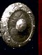

Crafteables
Blacksmithing - Herrería
Armaduras Normales - Normal Armors
| Imagen | Articulo/Objeto | Skillmake | Resources |
|---|---|---|---|
| " | Armor EarthSpirit - 85 armor | 80 Blacksmithing | 100 lingotes Earth |
 " " |
Armor EvilSpirit - 75 armor | 70 Blacksmithing | 100 lingotes EvilSpirit |
 " " |
Armor Mystic - 80 armor | 80 Blacksmithing | 100 lingotes Mystic |
 " " |
Armor Titanium - 98 armor | 90 Blacksmithing | 100 lingotes Titanium |
| " | Armor Scorpion - 80 armor | 80 Blacksmithing | 100 lingotes Scorpion |
 " " |
Armor Moon - 112 armor | 108 Blacksmithing | 100 lingotes Moon |
 " " |
Armor DemonSkin - 105 armor | 100 Blacksmithing | 100 lingotes DemonSkin |
| " | Armor AngelSkin - 105 armor | 100 Blacksmithing | 100 lingotes AngelSkin |
| " | Armor Elfic - 120 armor | 115 Blacksmithing | 100 lingotes Elfic |
Armaduras Especiales - Specials Armors
| Imagen | Articulo/Objeto | Skillmake | Resources |
|---|---|---|---|
| " | Armor Kriptonite - 135 armor | 123 Blacksmithing | 100 lingotes Kriptonite |
| " | Armor Artema - 135 armor | 123 Blacksmithing | 100 lingotes Artema |
| " | Armor Adamantio - 141 armor | 125 Blacksmithing | 100 lingotes Adamantio |
| " | Armor Sapphire - 150 armor | 128 Blacksmithing | 100 lingotes Sapphire |
| " | Armor Ruby - 150 armor | 128 Blacksmithing | 100 lingotes Ruby |
| " | Armor Atomic - 177 armor - +24.00 Resisting Spells | 132 Blacksmithing | 100 lingotes Atomic |
| " | Escudo del Viajero | 115 Blacksmithing, 100 Magery | 2 ancient stone, 66 Moon ingots |
| " | Escudo Egipcio | 115 Blacksmithing, 100 Magery | 3 piedras egipcias, 66 Moon ingots | " | Ruby Armor Dragon - multiplica por 2,5 de fuerza al dragon y otorga + 50 armor | 125 Blacksmithing | 225 lingotes Ruby |
Armas Legendarias - Legendary Weapons
| Imagen | Articulo/Objeto | Skillmake | Resources |
|---|---|---|---|
| " | Sun sword | 115 Blacksmithing, 100 Magery | 3 crystal sun, 66 kriptonite ingots |
 " " |
Sun Blade | 118 Blacksmithing, 100 Magery | 5 crystal sun, 66 moon ingots y 33 mystic ingots |
| " | Sun Axe | 123 Blacksmithing, 100 Magery | 8 crystal sun, 66 kriptonite ingots |
| " | Blue Death Axe | 123 Blacksmithing, 100 Magery | 5 ancient stone, 66 elfic ingots |
| " | Evil sword | 115 Blacksmithing, 100 Magery | 4 ancient stone, 66 EvilSpirit ingots, 66 Scorpion ingots |
| " | Double Tomahawk | 121 Blacksmithing, 110 Magery (necesitas amulero alta magia para fabricarla) | 5 ancient stone, 66 Mystic ingots, 25 Ruby ingots | " | Imperial Axe | 126 Blacksmithing | 5 cristal imperial, 50 titanium ingots, 10 kriptonite ingots | " | Diablo Axe | 126 Blacksmithing | 2 cristal veneno, 3 ancient stone, 66 DemonSkin ingots, 10 kriptonite ingots | " | Espada Bastarda Aserrada | 128 Blacksmithing, 110 Magery | 2 cristal imperial, 5 ancient stone, 70 Angekskin ingots |  " " |
Spirit Axe | 123 Blacksmithing, 100 Magery | 6 ancient stone, 100 Mystic ingots | " | Star Blade | 123 Blacksmithing, 100 Magery | 3 Runas de las estrellas, 66 EvilSpirit ingots | " | Moon Blade | 126 Blacksmithing, 110 Magery | 5 Runas de las estrellas, 100 Moon ingots, 50 Kriptonite ingots |
Mining
Minerales Especiales y Tesoros extraibles - Ores & Treasures
| Imagen | Articulo/Objeto | Skillmake | Difficulty |
|---|---|---|---|
| " | Restos de un minero muerto | 100 Mining | Alto - High |
| " | DemonSkin ore | 100 Mining | Medio - Medium |
| " | AngekSkin ore | 100 Mining | Medio - Medium |
| " | Moon ore | 100 Mining | Medio - Medium |
| " | Elfic ore | 100 Mining | Medio - Medium |
| " | Kriptonite ore | 115 Mining | Medioalto - Medium/High |
| " | Artema ore | 115 Mining | Medioalto - Medium/High |
| " | Adamantio ore | 117 Mining | Medioalto - Medium/High |
| " | Ruby ore | 125 Mining | Medioalto - Medium/High |
| " | Sapphire ore | 125 Mining | Alto - High |
| " | Atomic ore | 128 Mining | Alto - High |
Tinkering
Amuletos y Pistolas crafteables
| Imagen | Articulo/Objeto | Skillmake | Resources |
|---|---|---|---|
| " | Amuleto Horus | 110 Tinkering | 2 ancient stone, 1 bola eden y 33 elfic ingots |
| " | Amuleto Lunar | 120 Tinkering | 3 ancient stone, 3 Runa de la Luna, 33 moon ingots |
| " | Amuleto Serpiente | 110 Tinkering | 2 ancient stone, 66 DemonSkin ingots y 10 pociones veneno mayor |
| " | Pendientes del Viajero | 110 Tinkering | 80 Moon ingots y 10 pociones RefreshTotal |
| " | Amuleto del Ankh | 115 Tinkering | 2 Ancient Stone, 50 scrolls paralyze , 50 Mystic ingots |
| " | Amuleto del Guerrero | 115 Tinkering | 2 Ancient Stone, 66 Elfic ingots |
| " | Amuleto de Alta Magia | 115 Tinkering | 2 Ancient Stone, 5 liche force, 33 EvilSpirit ingots |
| " | Rifle M4 | 122 Tinkering, 110 Magery | 5 Ancient Stone, 100 Titanium ingots |
| " | Magnun | 122 Tinkering, 110 Magery | 5 Ancient Stone, 100 Scorpion ingots |
 " " |
Handcanon | 122 Tinkering, 110 Magery | 5 Ancient Stone, 100 Mystic ingots |
| " | Balas para pistolas | 100 Tinkering | 3 titanium ingots, 1 iron ingots |
HTML (Hypertext Markup Language) is the set of markup symbols or codes inserted in a file intended for display on a World Wide Web browser page. The markup tells the Web browser how to display a Web page's words and images for the user. Each individual markup code is referred to as an element (but many people also refer to it as a tag). Some elements come in pairs that indicate when some display effect is to begin and when it is to end.